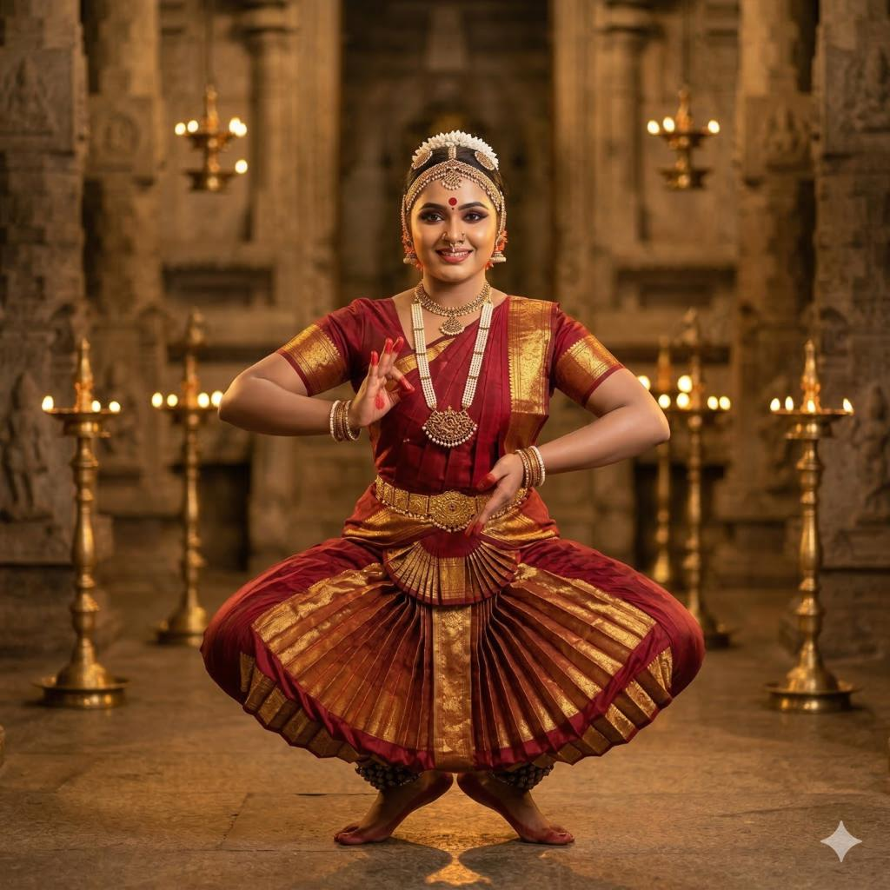
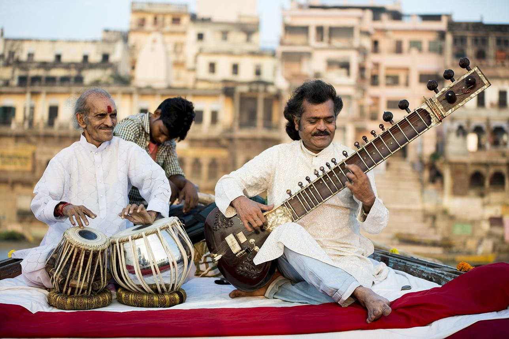
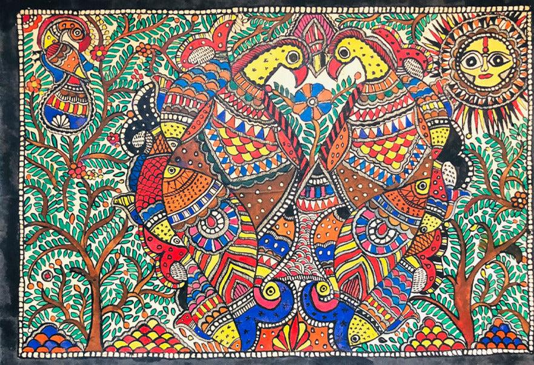
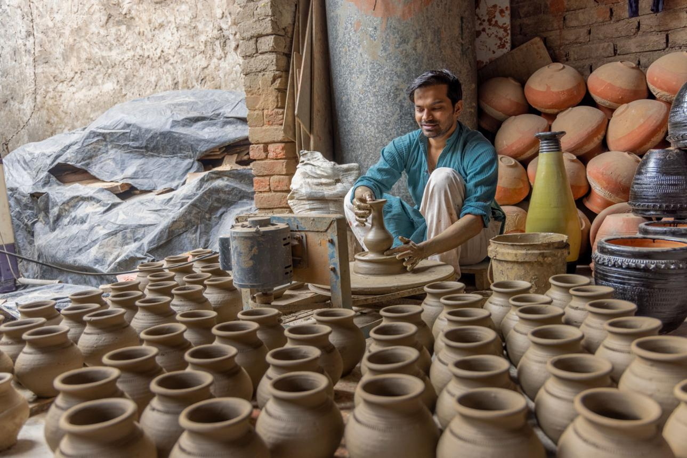
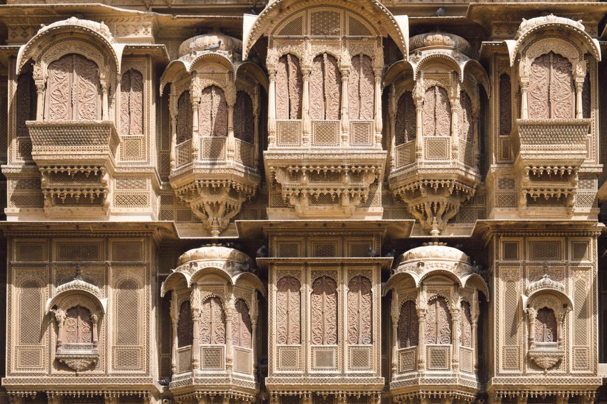
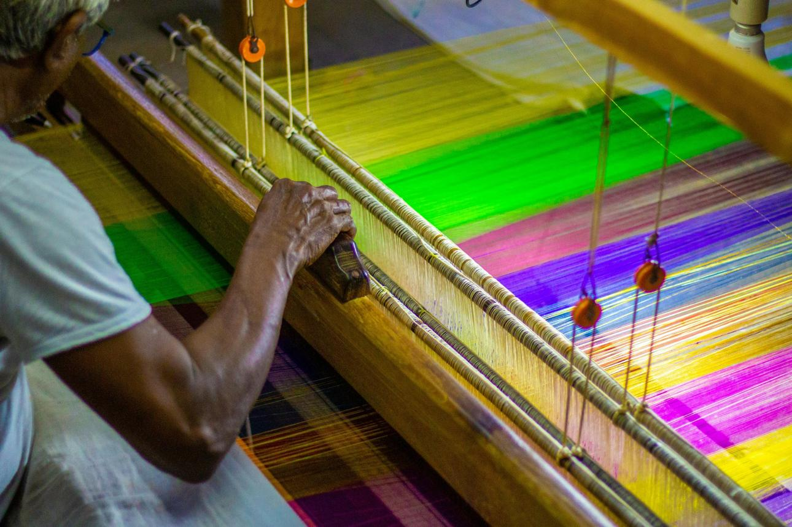

Classical Dance
Discover traditional dance forms such as Bharatanatyam, Kathak, Odissi, and Kathakali.
THE SOUL OF INDIA
Explore the artistic traditions, classical performances, crafts, and creative expressions that shape India's cultural identity.
Explore Indian CultureA TAPESTRY OF TRADITIONS
India's culture is a rich blend of regional traditions, languages, artistic practices, and centuries-old knowledge. From classical dance and music to intricate paintings and handmade crafts, every art form tells a story.
EXPLORE THE ART FORMS
Discover the creativity and traditions behind India's diverse art forms.

Discover traditional dance forms such as Bharatanatyam, Kathak, Odissi, and Kathakali.

Explore Hindustani and Carnatic music, classical instruments, and regional folk songs.

Experience the storytelling traditions of Madhubani, Warli, Pattachitra, and Phad art.

Discover pottery, textiles, woodwork, embroidery, and handmade decorative arts.

Explore regional building styles, carved structures, stepwells, and historic homes.

Learn about handloom traditions, regional fabrics, embroidery, and weaving techniques.